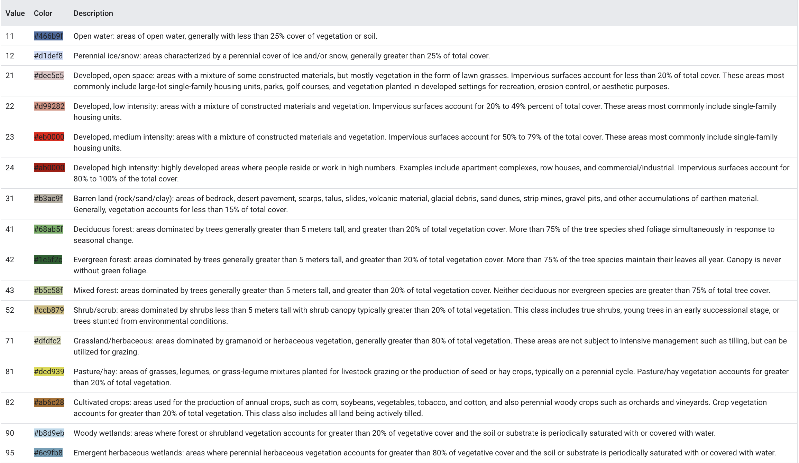

pa_tracts = gpd.read_file('######')
# dissolve geometry to get the boundary
pa_bound = pa_tracts.dissolve()
# convert the geometry into a format suitable for gee
pa_geom= ee.Geometry.Polygon(list(pa_bound['geometry'].iloc[0].exterior.coords))
aoi = ee.FeatureCollection(pa_geom)Raster Data and Google Earth Engine
To get remote sensing data, we used the following packages. The ee package (Earth Engine Python API) facilitates interaction with Google Earth Engine for large-scale geospatial processing. geemap supports visualization and analysis of Earth Engine data in Python. os is used for interacting with the file system, and requests handles HTTP requests to retrieve data from web sources. The datetime module manages date and time operations, while geopandas and pandas are essential for working with spatial and tabular data, respectively, to load and further process downloaded data.
Note: Since the raster data used in this project are relatively large in size, all operations were conducted on Google Colab, which provides a more seamless environment for interacting with Google Earth Engine and is better at handling the processing of large datasets. The code here are just for demonstration purposes. All file paths have been removed.
If you wish to reproduce this study, this project requires authentication with Google Earth Engine (GEE) to access its geospatial data and computational capabilities. To begin, users must authenticate using ee.Authenticate() and initialize the connection to their GEE project with ee.Initialize(project="your_project_name"). Ensure you have a valid Google Earth Engine account and have created a project within your GEE console. These steps enable the seamless integration of Earth Engine operations within the Python environment.
Additionally, users need to establish a connection with your Google Drive to store and manage data files. This is done using the following commands: from google.colab import drive then drive.mount('/content/drive')
Study Area Preparation
To limit our study area to the state of Pennsylvania, we retrieved the geojson file of all Pennsylvania census tracts from the Open Data Pennsylvania. Next, the code dissolves the geometries of all features in the GeoDataFrame pa_tracts into a single geometry representing the boundary of Pennsylvania. Then, it extracts the exterior coordinates of the dissolved boundary geometry and converts them into a list format suitable for google earth engine. This list of coordinates is used to create a polygon geometry pa_geom using the ee.Geometry.Polygon() function from the Earth Engine Python API.
The polygon geometry representing the boundary of Pennsylvania is converted into an Earth Engine FeatureCollection (aoi). This FeatureCollection serves as the study area extent for subsequent analysis within Google Earth Engine and is used later in the study to clip the satellite images.
We also need to simplify the geometries in pa_tracts by reducing the number of vertices in each geometry using the specified tolerance of 0.01. The simplify method ensures that the topological integrity of the geometries is preserved. After simplification, the modified GeoDataFrame is converted to a Google Earth Engine (GEE) object using the geemap.geopandas_to_ee function, allowing for further geospatial analysis in the GEE platform, specifically when performing zonal statistics.
tolerance = 0.01
pa_tracts['geometry'] = pa_tracts['geometry'].simplify(tolerance, preserve_topology=True)
pa_tracts_ee = geemap.geopandas_to_ee(pa_tracts)Loading Landsat Data
We acquired all Landsat 8 level 2 images satellite images from Spring 2022 to Spring 2023 over the study area. These images were obtained via the Google Earth Engine API and are coded in the Earth Engine Data Catalog as USGS Landsat 8 Level 2, Collection 2, Tier 1. We acquired those images by season and took the average before further processing.
This specific version and level of processing of Landsat 8 satellite imagery provided by the United States Geological Survey uses Surface Reflectance Code to generate products with geometrical, radiometric, and atmospheric corrections. These products have a spatial resolution of 30 m. The products used in this study as predictors are the surface reflectance OLI bands, brightness temperature (BT), and some pre-processed indexes, such as the normalized difference vegetation index (NDVI), the soil-adjusted vegetation index (SAVI), and the enhanced vegetation index (EVI). Moreover, the images were processed to scale alll the bands and remove cloud coverage.
Since we are taking into the account the impact of seasonal variabtions of vegetation indices on COPD, let’s first set up the constants that define the temporal extent of our study and transform them into a format that Earth Engine expects.
## Define Time Period
startSpring = datetime(2022, 3, 1) # spring
endSpring = datetime(2022, 5, 31)
startSummer = datetime(2022, 6, 1) # summer
endSummer = datetime(2022, 8, 31)
startFall = datetime(2022, 9, 1) # fall
endFall = datetime(2022, 11, 30)
startWinter = datetime(2022, 12, 1) # winter
endWinter = datetime(2023, 2, 28)
# Format dates into strings that Earth Engine expects ("YYYY-MM-DD")
startSpring= startSpring.strftime('%Y-%m-%d')
endSpring = endSpring.strftime('%Y-%m-%d')
startSummer = startSummer.strftime('%Y-%m-%d')
endSummer = endSummer.strftime('%Y-%m-%d')
startFall = startFall.strftime('%Y-%m-%d')
endFall = endFall.strftime('%Y-%m-%d')
startWinter = startWinter.strftime('%Y-%m-%d')
endWinter = endWinter.strftime('%Y-%m-%d')The function apply_scale_factors applies scale and offset adjustments to Landsat satellite imagery bands, specifically for optical and thermal bands. In the Landsat data, pixel values are often represented as digital numbers (DN) which require conversion to physical units like reflectance or temperature.
## Helper Function - Scale Bands
def apply_scale_factors(image):
# Scale and offset values for optical bands
optical_bands = image.select('SR_B.').multiply(0.0000275).add(-0.2)
# Scale and offset values for thermal bands
thermal_bands = image.select('ST_B.*').multiply(0.00341802).add(149.0)
# Add scaled bands to the original image
return image.addBands(optical_bands, None, True) \
.addBands(thermal_bands, None, True)The cloud_mask function is designed to create a binary mask for identifying and masking out pixels affected by clouds and cloud shadows in Landsat satellite imagery. It plays a crucial role in pre-processing Landsat imagery by removing cloud and cloud shadow effects to enhance data quality and reliability for downstream analysis.
## Helper Function - Mask Clouds
def cloud_mask(image):
# Define cloud shadow and cloud bitmask (Bits 3 and 5)
cloud_shadow_bit_mask = 1 << 3
cloud_bit_mask = 1 << 5
# Select the Quality Assessment (QA) band for pixel quality information
qa = image.select('QA_PIXEL')
# Create a binary mask to identify clear conditions (both cloud and cloud shadow bits set to 0)
mask = qa.bitwiseAnd(cloud_shadow_bit_mask).eq(0) \
.And(qa.bitwiseAnd(cloud_bit_mask).eq(0))
# Update the original image, masking out cloud and cloud shadow-affected pixels
return image.updateMask(mask)As we breifly mentioned in the introduction, we acquired four different indices based on the bands of our satellite images. They are NDVI, SAVI, EVI, and LST. This function below will calculate all the indices we need all at once. Among those, NDVI is a common vegetation index used to assess the presence and health of vegetation based on the difference in reflectance between near-infrared (NIR) and red light wavelengths.
The formula is NDVI = (Band 5 – Band 4) / (Band 5 + Band 4)
SAVI is a vegetation index similar to NDVI but incorporates a soil brightness correction factor to account for variations in soil reflectance.
The formulas is SAVI = ((Band 5 – Band 4) / (Band 5 + Band 4 + 0.5)) * (1.5)
EVI is a vegetation index designed to minimize the influence of atmospheric conditions and background noise on vegetation assessments.
The formula is EVI = 2.5 * ((Band 5 – Band 4) / (Band 5 + 6 * Band 4 – 7.5 * Band 2 + 1))
Finally, the calculation of land surface temperature (LST) needs to be broken down into the following steps:
Minimum and Maximum NDVI Calculation: It calculates the minimum and maximum NDVI values within the AOI using the reduceRegion() method. The reducer parameter specifies the type of aggregation (in this case,
min()andmax())Fraction of Vegetation (FV) Calculation: It computes the Fraction of Vegetation (FV) using the
NDVIvalues,NDVI_min, andNDVI_maxobtained in the previous step. The formula calculates the square of the normalized difference betweenNDVIandNDVI_mindivided by the difference betweenNDVI_maxandNDVI_min. `Emissivity (EM) Calculation: It calculates the emissivity using the FV values obtained from the previous step. The formula computes the emissivity based on the FV values according to the provided equation.
Land Surface Temperature (LST) Calculation: It computes the Land Surface Temperature (LST) using the thermal band (Band 10) from the Landsat imagery and the emissivity values calculated earlier. The formula calculates the LST based on the Planck’s Law, considering the thermal band as temperature in Kelvin and the calculated emissivity.
def calculate_seasonal_indices(image_collection, aoi, season_name):
# Calculate NDVI
ndvi = image_collection.normalizedDifference(['SR_B5', 'SR_B4']).rename('NDVI')
# Calculate SAVI
savi = image_collection.expression(
'1.5 * (NIR - RED) / (NIR + RED + 0.5)', {
'NIR': image_collection.select('SR_B5'),
'RED': image_collection.select('SR_B4')
}
).rename('SAVI')
# Calculate EVI
evi = image_collection.expression(
'2.5 * ((NIR - RED) / (NIR + 6 * RED - 7.5 * BLUE + 1))', {
'NIR': image_collection.select('SR_B5'),
'RED': image_collection.select('SR_B4'),
'BLUE': image_collection.select('SR_B2')
}
).rename('EVI')
# NDVI min and max for Fraction of Vegetation (FV) calculation
ndvi_min = ndvi.reduceRegion(
reducer=ee.Reducer.min(),
geometry=aoi,
scale=30,
maxPixels=1e9
).get('NDVI')
ndvi_max = ndvi.reduceRegion(
reducer=ee.Reducer.max(),
geometry=aoi,
scale=30,
maxPixels=1e9
).get('NDVI')
# Convert NDVI_min and NDVI_max to ee.Number
ndvi_min = ee.Number(ndvi_min)
ndvi_max = ee.Number(ndvi_max)
# Fraction of Vegetation (FV)
fv = ndvi.subtract(ndvi_min).divide(ndvi_max.subtract(ndvi_min)).pow(2).rename('FV')
# Emissivity (EM)
em = fv.multiply(0.004).add(0.986).rename('EM')
# Thermal band (Band 10)
thermal = image_collection.select('ST_B10').rename('thermal')
# Land Surface Temperature (LST)
lst = thermal.expression(
'(TB / (1 + (0.00115 * (TB / 1.438)) * log(em))) - 273.15',
{
'TB': thermal.select('thermal'), # Thermal band temperature in Kelvin
'em': em # Emissivity
}
).rename('LST')
seasonal_image = ndvi.addBands([savi, evi, fv, em, lst])
return seasonal_imageWe define a dictionary that maps each season to its corresponding start and end dates. The code then iterates through each season, filters a Landsat 8 image collection based on the region of interest (aoi) and the defined seasonal date range, applies scale factors and a cloud mask, computes the median composite of the images, and clips the result to the aoi. For each season, the processed image collection is passed to the calculate_seasonal_indices function, which calculates season-specific indices (e.g., NDVI, SAVI).
seasons = {
'spring': (startSpring, endSpring),
'summer': (startSummer, endSummer),
'fall': (startFall, endFall),
'winter': (startWinter, endWinter)
}
seasonal_results = {}
for season, (start_date, end_date) in seasons.items():
image_collection = ee.ImageCollection("LANDSAT/LC08/C02/T1_L2") \
.filterBounds(aoi) \
.filterDate(start_date, end_date) \
.map(apply_scale_factors) \
.map(cloud_mask) \
.median() \
.clip(aoi)
seasonal_results[season] = calculate_seasonal_indices(image_collection, aoi, season)Next, the function below helps to summarize our calculated indicies into census tracts using zonal statistics. This is one of the easiest method of brining raster information into vector geometries. In Earth Engine, zonal statistics can be calculated by aggregating pixel values within geometries defined by feature collections (in our case, the census tracts). Common summary statistics computed for each zone include mean, sum, minimum, maximum, standard deviation, and percentile values (in our case, we will calculate the mean). We wrote the export zonal statistics function and by default, it will write the output directly to google drive.
# Function to export zonal stats to Google Drive
def export_zonal_stats(image, reducer, file_name, folder_name="######"):
zonal_stats = image.reduceRegions(
collection=pa_tracts_ee,
reducer = ee.Reducer.mean()
scale=30 # Resolution of the analysis
)
task = ee.batch.Export.table.toDrive(
collection=zonal_stats,
fileFormat='CSV',
fileNamePrefix=file_name.replace('.csv', ''),
folder=folder_name
)
task.start()
print(f"Export started for {file_name}. Check Google Drive for the results.")The code below will give us 16 separate csv files, each with four columns. The system:index is a unique identifier for each census tract, the mean is the mean pixels values, the .geo is the geometry of each census tracts, and GEOID is the identifier for each census tract.
seasonal_results = {
"spring": seasonal_results['spring'],
"summer": seasonal_results['summer'],
"fall": seasonal_results['fall'],
"winter": seasonal_results['winter']
}
bands = ['NDVI', 'EVI', 'SAVI', 'LST']
for season, image in seasonal_results.items():
for band in bands:
band_image = image.select(band) # Extract specific band
file_name = f"{band.lower()}_{season}.csv" # File name e.g., ndvi_spring.csv
export_zonal_stats(image=band_image, reducer=reducer, file_name=file_name)Loading Land Cover Data
We also acquired USGS National Land Cover Data for our study area. These images were also obtained via the Google Earth Engine API and are coded in the Earth Engine Data Catalog. We use the 2021 data because that is the latest release avaialbe on Earth Engine and we assume that the landcover of 2021 would match with that of 2022. Afterloading the data, filter is applied to extract the land cover data for the year 2021. The select method isolates the landcover band, which contains the land cover classification. Then, the data is clipped to the specified area of interest (aoi), creating a subset focused on Pennsylvania.
dataset = ee.ImageCollection('USGS/NLCD_RELEASES/2021_REL/NLCD')
nlcd2021 = dataset.filter(ee.Filter.eq('system:index', '2021')).first()
landcover = nlcd2021.select('landcover')
pa_landcover = landcover.clip(aoi)This landcover dataset is publicly available and consists of 8 main land cover classes and 20 sub-classes of land cover. These classes include Water (open water and perennial ice/snow), Developed (high, medium, low and open space), Barren (rock/sand/clay), Forest (deciduous, evergreen and mixed), Shrubland (dwarf shrub and shrub), Herbaceous (grassland, sedge, lichens and moss), Planted/ Cultivated (pasture/hay and cultivated crops) and Wetlands (woody and emergent herbaceous). For detailed land cover classification, refer to the chart below:

In this study, various land cover types are grouped into broader categories based on their respective NLCD codes for simplicty of analysis. For example, high-density areas are defined as land cover types 23 and 24, which typically represent urban environments. Similarly, low-density areas (codes 21 and 22) correspond to open spaces like barren land and low-density residential areas. Forested areas are grouped under codes 41, 42, and 43, while grasses are categorized with codes 52, 71, 81, and 82. Wetlands and open water are also identified using their specific codes (90, 95, and 11). This categorization simplifies the analysis by grouping similar land cover types together based on their characteristics, enabling focused analysis of specific land use patterns.
high_density = pa_landcover.eq(23).Or(pa_landcover.eq(24))
low_density = pa_landcover.eq(21).Or(pa_landcover.eq(22))
forest = pa_landcover.eq(41).Or(pa_landcover.eq(42)).Or(pa_landcover.eq(43))
grasses = pa_landcover.eq(52).Or(pa_landcover.eq(71)).Or(pa_landcover.eq(81)).Or(pa_landcover.eq(82))
wetlands = pa_landcover.eq(90).Or(pa_landcover.eq(95))
open_water = pa_landcover.eq(11)As briefly mentioned in the workflow, given that these proportions can be similar across multiple census tracts despite the underlying distribution of land cover being different (e.g., two census tracts can have the same percentage of highly developed land, but that land can be geographically concentrated in one tract and distributed in the other), we introduced additional features to represent the distribution of land cover features. For each census tract we calculate features representing i) the proportion of high developed land pixels neighboring another high developed land pixel and ii) the proportion of forest pixels neighboring another forest pixel. These features were intended to capture the notion that developed land corresponds to higher level of pollution while forests and trees can be a source of pollen, both of which have adverse impact on patients suffering from asthma and COPD.
The code below achieves this goal. It first creates a kernel for identifying neighboring pixels, then calculates the total number of land cover pixels within each region. It also computes the number of neighboring land cover pixels using a convolution operation to identify adjacent pixels. These calculations are performed using the reduceRegions method to aggregate the data for each region of interest (e.g., census tracts) from the input land cover mask. The results are then merged, associating the total land cover and neighboring land cover values with their corresponding region identifiers (GEOID). Finally, the function exports the aggregated data as a CSV file to Google Drive.
def neighboring_landcover_metrics(landcover_mask, file_name):
# Define the kernel for neighboring pixels
kernel = ee.Kernel.square(radius=1, units='pixels') # 3x3 neighborhood
neighbors = landcover_mask.convolve(kernel).gte(1) # At least one neighbor
# Calculate total landcover pixels
total_landcover = landcover_mask.reduceRegions(
collection=pa_tracts_ee,
reducer=ee.Reducer.sum(),
scale=30
).select(['sum'], ['total_landcover'])
# Calculate neighboring landcover pixels
neighbor_landcover = neighbors.reduceRegions(
collection=pa_tracts_ee,
reducer=ee.Reducer.sum(),
scale=30
).select(['sum'], ['neighbor_landcover'])
# Merge FeatureCollections and retain geoid
merged_fc = total_landcover.map(lambda feature:
feature.set(
'neighbor_landcover',
neighbor_landcover.filter(ee.Filter.eq('system:index', feature.get('system:index')))
.first()
.get('neighbor_landcover')
).set(
'geoid', pa_tracts_ee.filter(ee.Filter.eq('system:index', feature.get('system:index')))
.first()
.get('GEOID')
)
)
# Export the merged FeatureCollection
export_task = ee.batch.Export.table.toDrive(
collection=merged_fc.select(['geoid', 'total_landcover', 'neighbor_landcover']),
folder='#######',
fileNamePrefix=file_name,
fileFormat='CSV'
)
export_task.start()
print(f"Export task started: {file_name}")For forest and high-density land cover types, the neighboring_landcover_metrics function is applied to calculate the number of neighboring land cover pixels within a 3x3 pixel neighborhood.
neighboring_landcover_metrics(
landcover_mask=forest,
file_name='forest_landcover_metrics'
)
neighboring_landcover_metrics(
landcover_mask=high_density,
file_name='high_density_landcover_metrics'
)For other land cover types such as grasses, low density, wetlands, and open water, the summarize_landcover_pixels function is used instead. This function simply calculates the total number of land cover pixels within each region, without considering neighboring pixels. The results for both types of metrics are then exported as CSV files to Google Drive for further analysis.
def summarize_landcover_pixels(landcover_mask, file_name):
# Calculate total landcover pixels
total_landcover = landcover_mask.reduceRegions(
collection=pa_tracts_ee,
reducer=ee.Reducer.sum(),
scale=30
).map(lambda feature: feature.set(
'geoid', feature.get('GEOID')
))
# Export the results to Drive
export_task = ee.batch.Export.table.toDrive(
collection=total_landcover.select(['geoid', 'sum']),
folder='#######',
fileNamePrefix=file_name,
fileFormat='CSV'
)
export_task.start()
print(f"Export task started: {file_name}")landcover_list = [
{'mask': grasses, 'file_name': 'grasses_landcover'},
{'mask': low_density, 'file_name': 'low_density_landcover'},
{'mask': wetlands, 'file_name': 'wetlands_landcover'},
{'mask': open_water, 'file_name': 'open_water_landcover'}
]
for landcover in landcover_list:
summarize_landcover_pixels(landcover['mask'], landcover['file_name'])